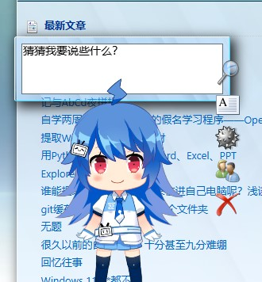
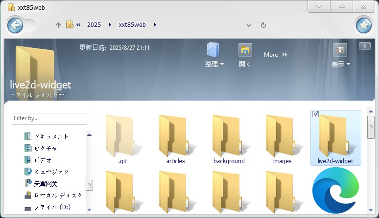

相信小伙伴们已经在首页看到这个可爱的小家伙了，这个东西其实挺常见的，像Halo之类的建站工具有专门的插件，下载个插件看板娘就配置好了，都不用动手，但像我这种喜欢自己写HTML的就没那么简单了。网上有很多对于静态网站配置看板娘的教程，但很多都不管用，我也是走了很多弯路才搞好，所以干脆出个教程
首先，这个看板娘基于一个开源项目：https://github.com/stevenjoezhang/live2d-widget，大家可以直接clone一下，但是我还是提供了配置好的文件，将下载好的文件放在网站根目录
打开这个文件夹，我们会发现里面有一个叫model的子文件夹，这里就是放模型的地方，网上有很多live2d模型可供下载，我也准备了一些。顾名思义，model_list.json里面就是模型的路径以及问候语